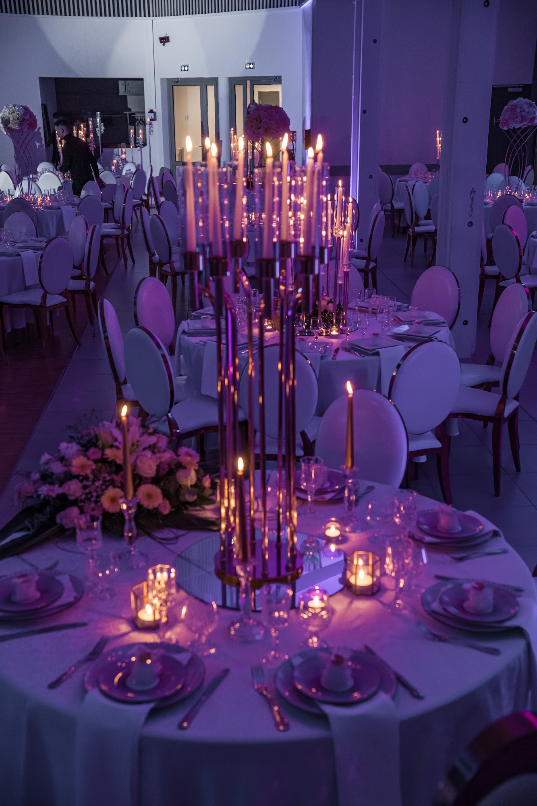
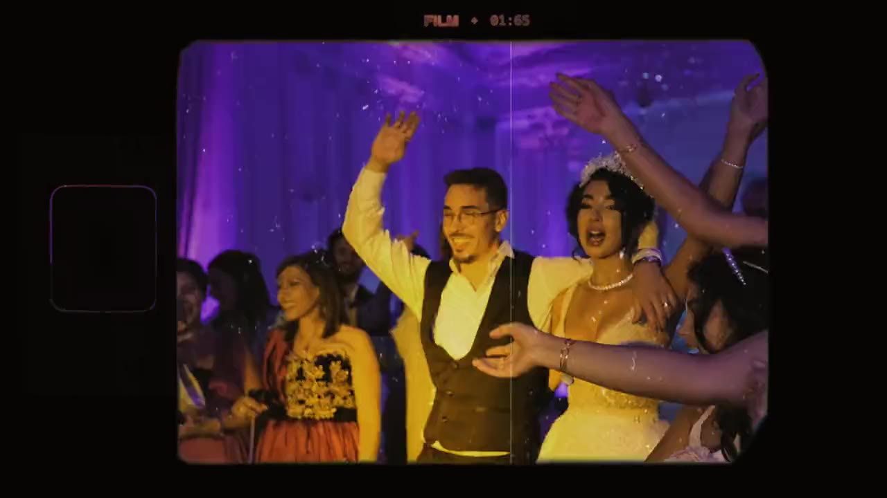

Photographe de soirée d'entreprise à Lyon : capter l'ambiance et l'énergie
Choisir un photographe de soirée d'entreprise à Lyon revient à confier la mémoire d'un temps fort où la rigueur professionnelle s'efface pour laisser place à la convivialité. Quand les collaborateurs quittent leurs bureaux pour célébrer un cap franchi, les échanges prennent une saveur différente. Je saisis ces instants avec un regard éditorial, sans fard et sans poses rigides.

L'accueil et le cocktail : capter les retrouvailles informelles
Le son des verres qui tintent, le bourdonnement grandissant des voix dans le hall et les premiers rires partagés donnent le ton dès les premières minutes. Les invités arrivent par petits groupes, se saluent, déposent leurs manteaux et découvrent le lieu sélectionné pour l'occasion. C'est le moment idéal pour saisir des interactions naturelles, des sourires chaleureux et des regards complices.
Pour ce cocktail d'accueil, je me fonds discrètement parmi les convives. Je travaille au téléobjectif ou à la focale fixe lumineuse pour capturer des scènes spontanées sans que les personnes ne se sentent observées. Ce parti pris offre des images vivantes où l'on ressent l'authenticité de chaque échange, loin des sourires crispés souvent provoqués par les flashs frontaux.

Mettre en valeur le décor et l'art de recevoir lors d'un gala d'entreprise
Une célébration d'entreprise soignée repose sur une scénographie réfléchie : le choix des matières, l'alignement des tables, les compositions florales et la finesse des assiettes dressées par les traiteurs. Lors d'un gala d'entreprise, ces éléments traduisent le soin accordé à vos collaborateurs et partenaires. Il est primordial d'en conserver des images impeccables avant que les invités ne s'installent.
J'arrive régulièrement en amont des premiers arrivants pour documenter la salle dans son état parfait. Je cadre les perspectives d'ensemble, les lustres, les menus personnalisés et les détails de la gastronomie. Ces photographies servent ensuite vos équipes de communication interne ou vos agences événementielles pour illustrer le niveau d'exigence de vos rassemblements.

Discours et célébrations : documenter la fierté des équipes
Le mot de bienvenue de la direction, la remise d'un prix interne ou l'annonce des succès collectifs constituent le cœur symbolique de la réunion. C'est l'instant où l'attention converge vers une estrade ou un pupitre. Mon travail consiste à capturer la conviction de l'orateur, mais surtout les réactions du public : un regard approbateur, un éclat de rire franc, des applaudissements nourris ou une pointe d'émotion partagée.
Je me déplace sans bruit d'un côté à l'autre de la pièce pour varier les angles. En isolant des silhouettes dans la pénombre tout en gardant l'orateur sous les projecteurs, je compose des images fortes qui racontent l'adhésion du collectif. Ces visages attentifs révèlent la cohésion de vos équipes bien plus qu'un simple portrait officiel.
Gérer la pénombre et les éclairages scéniques sans dénaturer l'atmosphère

Photographier en basse lumière constitue le défi majeur des événements en nocturne. Entre les faisceaux colorés des projecteurs, les bougies disposées sur les guéridons et les zones d'ombre de la salle, l'environnement lumineux change sans cesse. Écraser cette ambiance avec un flash direct détruirait le travail des éclairagistes et l'atmosphère intimiste voulue pour l'événement.
J'utilise des boîtiers très performants en haute sensibilité et des optiques à très grande ouverture. Lorsque j'ajoute de la lumière artificielle, elle est indirecte, subtile ou posée sur des pieds distants pour sculpter les contours sans éblouir les invités. Les tons chauds des bougies et les lueurs tamisées restent ainsi fidèles à ce que vous avez ressenti sur place.
La vidéo soirée d'entreprise : restituer le rythme et le son de la fête
Si la photographie fige l'émotion d'une fraction de seconde, la vidéo restitue le dynamisme, le tempo musical et les éclats de voix. Proposer une vidéo soirée d'entreprise sous forme de film récapitulatif permet de revivre l'événement avec toute sa charge sensorielle. Le tintement des verres, les mots marquants prononcés au micro et la montée en puissance de la musique composent un récit vibrant.
Je réalise des plans courts, fluides et rythmés, tournés à hauteur d'homme pour immerger le spectateur. Le montage alterne les ralentis élégants pendant le cocktail et les coupes dynamiques dès que les festivités s'accélèrent. Ce format percutant se partage facilement dès le lendemain sur votre intranet ou vos réseaux professionnels.

La piste de danse : capter le lâcher-prise en mouvement
Lorsque le DJ ou le groupe en direct prend le contrôle du son, la soirée bascule dans une dimension festive totale. Les barrières hiérarchiques tombent et chacun laisse libre cours à son énergie. Pour documenter cette phase sans être intrusif, il faut savoir anticiper les mouvements et partager l'énergie de la foule sans jamais la gêner.
J'aime jouer avec des vitesses d'obturation légèrement plus lentes pour suggérer la cadence des pas, les mouvements de vestes et les rires en mouvement, tout en conservant une netteté impeccable sur les visages. Les lumières tournantes créent des traînées graphiques qui traduisent l'effervescence de la fête. Vos collaborateurs gardent ainsi des souvenirs fidèles de ce moment de relâchement.

Fédérer autour d'une soirée de fin d'année réussie
Organiser une soirée de fin d'année représente un investissement important pour valoriser l'effort fourni tout au long des mois passés. Disposer d'une galerie complète quelques jours après l'événement permet de prolonger ce sentiment de reconnaissance. Quand chacun retrouve sa photo au détour d'un éclat de rire avec un collègue d'un autre service, le lien d'appartenance s'en trouve consolidé.
Les images obtenues alimentent également votre marque employeur. Des photographies vivantes et soignées témoignent d'une culture d'entreprise saine et dynamique, ce qui attire les futurs talents bien plus efficacement que de simples déclarations formelles.
Lieux de caractère à Lyon et en région pour vos réceptions privées
De la Presqu'île aux berges du Rhône, en passant par les docks modernes de Confluence ou les bâtisses historiques des Monts d'Or et du Beaujolais, le bassin lyonnais regorge d'espaces exceptionnels pour vos soirées professionnelles. Chaque lieu impose son propre style : verrière contemporaine ouverte sur le fleuve, salle voûtée de pierre dorée ou cour intérieure d'un hôtel particulier.
Adapter ma prise de vue aux volumes et aux matières de ces espaces fait partie intégrante de ma démarche. Qu'il s'agisse d'un salon intime dans le quartier des Brotteaux ou d'une vaste terrasse surplombant la Saône, je m'appuie sur le caractère du lieu pour conférer à votre événement une signature visuelle unique.

Questions fréquentes
Comment gérez-vous la lumière très faible lors d'une soirée d'entreprise ?
Je travaille avec des optiques lumineuses et des capteurs capables d'exploiter la pénombre naturelle sans flash agressif. Lorsque c'est indispensable, j'utilise un éclairage d'appoint très discret et diffusé pour respecter la scénographie lumineuse de la salle.
Combien de temps faut-il pour recevoir les photos après la soirée ?
Je livre généralement une sélection de clichés marquants sous 24 à 48 heures pour vos besoins urgents de communication interne ou de réseaux sociaux. L'ensemble de la galerie finalisée et traitée est remis dans les jours qui suivent.
Pouvez-vous réaliser à la fois les photos et la vidéo de notre événement ?
Oui, je propose des formules combinées en reportage hybride pour les formats intimistes ou en équipe coordonnée pour les événements plus denses. Cela garantit une homogénéité esthétique parfaite entre vos visuels fixes et animés.
Les invités peuvent-ils accéder facilement aux photos de la soirée ?
Une galerie en ligne privée et sécurisée par mot de passe est mise à votre disposition. Vos collaborateurs peuvent y consulter les images en haute définition et télécharger librement leurs clichés favoris.
Parlons ensemble du déroulement de votre prochaine soirée d'entreprise à Lyon pour définir le reportage photo et vidéo adapté à votre événement.
Parlons de votre projet